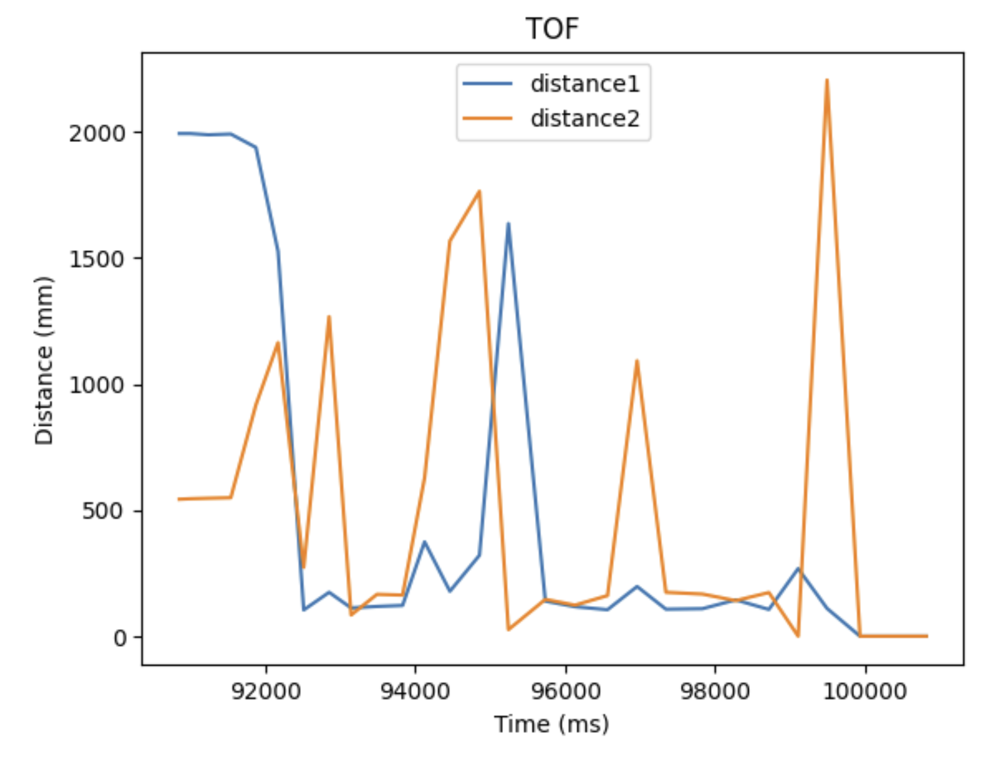
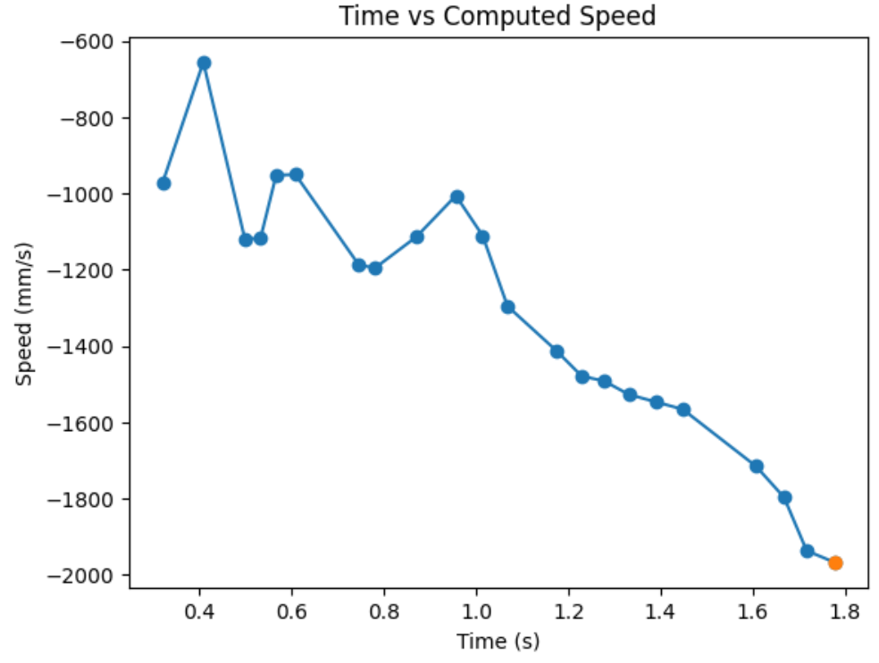
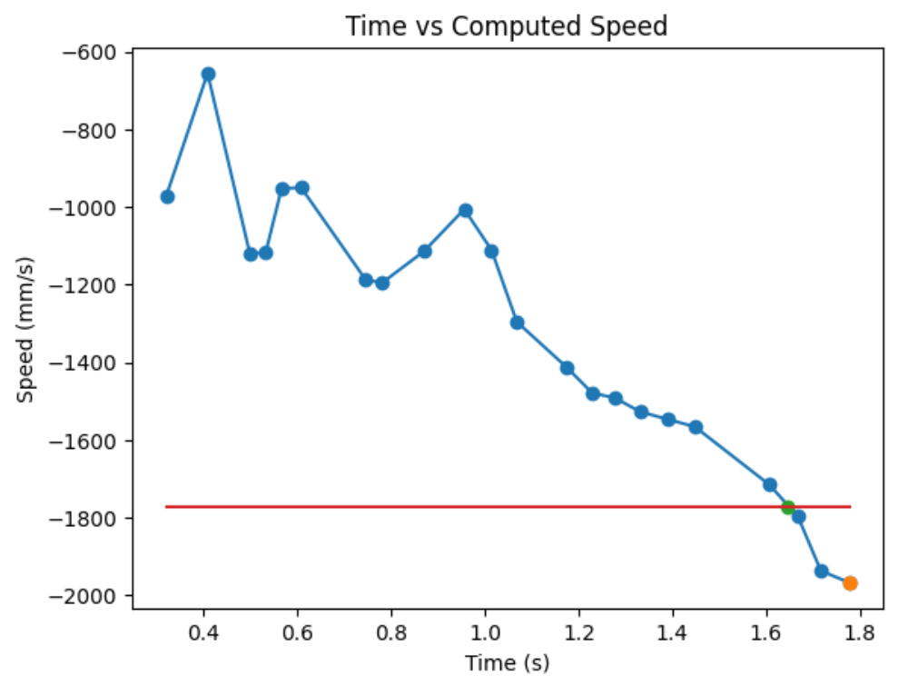

MAE 4190 | Fast Robots
Jueun Kwon
Jueun Kwon


Hello! My name is Jueun Kwon, and I am a junior mechanical engineering student at Cornell University. I am passionate about applying mechanical engineering and robotics concepts to various fields such as autonomous systems, hardware, and product design.

The goal of this lab was to get setup with Arduino and Appollo3 software, as well as to get comfortable using the Artemis board.
I hooked up the Artemis board to my computer and followed the step by step instruction from this link. I uploaded the code found from "File->Examples->01.Basics->Blink" to the board and lowered the baud rate to 115200 bits per second in order to make the board blink.
I uploaded the code found from "File->Examples->Apollo3->Example01_Serial" to the board. The serial communication between Artemis and the computer was tested and shown on the serial monitor. I was able to provide input and view the output as well.
I uploaded the code found from "File->Examples->Apollo3->Example02_AnalogRead" to test the sensors on the board. The serial monitor printed the sensor readings for analog voltage, temp, Vcc, Vss, and time. For the purpose of this lab, I focused on the temperature sensor. The temperature readings went up when I put my finger on the chip and down when I removed my finger from the chip.
I uploaded the code found from "File->Examples->PDM->Example1_MicrophoneOutput" to test my microphone. I observed in the serial monitor that the frequency went up when I whistled at the board.
The goal of this lab is to establish bluetooth communication and transfer data between the computer and the arthemis board.
I learned about the basics of a BLE through this link. I installed python3, pip, jupyter, and set up the "FastRobots_ble" virtual environment. Then, I checked to make sure I downloaded a Python >= 3.9 and pip >= 21.

I installed and burned the sketch ble_arduino.ino from the codebase. From this, I was able to identity my MAC address.

The codebase includes all the necessary files to let my computer communicate with the artemis board via bluetooth. The codebase can be viewed mainly in two parts: ble_arduino and ble_python. ble_arduino includes set up code and arduino code that will run on the artemis board. ble_python includes all set up code and jupyter notebook to run all the commands.
ArdunioBLE uses Bluetooth LE radio that works like a bulletin board, shared between the computer and the arthemis board. If the arthemis posts data on the bulletin board, my computer can read the data posted on the bulletin board.
Starting Bluetooth:
Because I couldn't get my artemis to connect via my original bluetooth module on my laptop, I used the plugable usb and enabled the additional bluetooth module via WSL.
I run the following commands everytime I restart bluetooth and open my jupyter lab:
In connections.yaml, I replaced the artemis_address value to match the MAC address given by my Artemis (shown in the pre section). In addition, I generated a new BLEService UUID from the juypter lab and updated connections.yaml and ble_aruino.ino to match this address.
demo.ipynb:
I checked that everything in the demo.ipynb file is working as intended. A runthrough of my demo is shown below:
Echo command sends a string from the computer to the artemis board. Then, the computer receives a string from the artemis board.
>GET_TIME_MILLIS command was added to get the time from the artemis board.

A notification handler was created to recieve string data from the artemis board and return the time.

GET_TEMP_5s command was added to get five timestamped internal die temperature reading from the artemis board. The temperature reading was taken once every second for five seconds.

GET_TEMP_5s command was added to get as many temperature data as possible in 5 seconds. A notification handler was used to manage data.
Working with strings introduces a huge latency, so it is better to transer data in chunks.
The artemis board has 385 kB of RAM. There are 8 bits in a byte and 1000 bytes in 1 kB.
So, artemis board has 385 x 1000 x 8 = 3080000 bits of RAM.
If we were to take 16 bit values at 150 Hz, that means we are taking 150 samples per second of the 16 bit data.
(150 samples/seconds) x (16 bit) = 2400 bit per second.
That means, we can theortically send 3080000/2400 = 1283.3 seconds of 16 bit values taken at 150Hz.
Since this is the theortical value, our limit would be less than 1283.3 seconds of 16 bit values taken at 150Hz.
The goal of this lab is to be able to use two ToF sensors at the same time and transfer ToF sensor data to the computer over bluetooth.
The default I2C sensor address, noted in the ToF sensor manual, is 0x52.
In order to use 2 ToF sensor, the sensor's address can be changed (while powered on) or the two sensors can be enabled alternatingly, with the use of their corresponding shutdown pins. I will take the former approach due to efficeny of changing the address once at the start of every run.
Given the sensor's range and angular sensitivity, I am planning to mount one ToF sensor to the front of the car and one to the side of the car. This means, I won't be detect obstacles on one of the sides and on the back.
Below is a sketch of my wiring diagram.
Below is my ToF sensor connected to your QWIIC breakout board and the Arthemis board.
I uploaded the code found from "File -> Examples -> Apollo3- > Example05_Wire_I2C" to the board to scan for the I2C address. The I2C address was read as 0x29 (or 0b11101) in the serial monitor.
However, we have to shift this by 1 bit because the sensor contains an LSBit at the end of the 7 bit address. So, 0b11101 becomes 0b110100, which is 0x52.
The ToF sensor has three distance modes: short, medium, and long. Short distance mode has a a maximum distance of 136cm in dark and 135 in ambient light. Long distance mode has a maximum distance of 360cm in dark and 73 in ambient light. I chose to use the short distance mode since it is more immune to various lighting conditions.
I uploaded the code found from "File -> Examples -> SparkFun VL53L1X 4m Laser Distance Senseor -> Example1_ReadDistance" to the board to test my chosen distance mode. Below is my set up to test my sensor's accuracy.
I plotted the measured distance vs actual distance in MATLAB. From this, I observed that the error between the measured distance and actual distance increases as we go further in distance.
I hooked up both ToF sensors simultaneously and utilized the shutdown pin to change the address of one of the ToF sensors. I left one of the address as default, 52, and changed the other address to my number of choice, 28.
From doing so, I was able to get both distance readings from the two ToF sensors.
I want the code execute quickly, without waiting for the sensors to finish measurements. So, I coded the Artermis to print the Artemis clock to the Serial continuously, as fast as possible, while only printing the new ToF sensor data from both sensors when they are available.
My loop executes at about 62 milliseconds. The current limiting factor is the run time of my checkForDataReady(). Whenever new data is available, I can send that data to the serial.
I added to my work from lab 2 so that I can record time-stamped ToF data for a set period of time and send it over Bluetooth.
Below is a time vs distance graph, generated by Artemis clock data and both of my sensor data.
The goal of this lab is to be able to use the IMU sensor on the robot and start running the artemis from a battery.
The IMU I used in this lab is the SparkFun 9DoF IMU Breakout - ICM-20948 (Qwiic) board. I read upon the software library and the datasheet to prepare for the lab.
The picture below shows my Artemis IMU connections. The IMU is connected to the Artemis board using the QWIIC connectors.
I installed the SparkFun 9DOF IMU Breakout - ICM 20948 - Arduino Library. Then, I uploaded the code found from "File->Examples->SparkFun 9DoF IMU Breakout - ICM 20948 - Arduino library->Arduino->Example1_Basics" to check that the IMU example code works.
AD0_VAL is the value of the last bit of the I2C address. By default, the bridge of the ADR on I2C board is not connected, and the corresponding default value on the SparkFun 9DoF IMU breakout is 1. When the ADR jumper bridge is connected, the value becomes 0. Since I didn't connect any bridges, I set ADO_VAL to the default value of 1.
In order to have a visual indication that my board is running, I added code to blink the LED on Arthemis at the end of the setup.
In the serial monitor, both acceleration and gyroscope data for x,y, and z was shown. I observed that the sensor values change as I rotate, flip, and accelerate the board. When I rotate the board, the gyroscope data changed. When I accelerated the board, I saw that the accerleration data changed.
Based on the equations from class, I converted the accelerometer data from the IMU into pitch and roll.
I used the surface of the table as a guide to check my pitcha and roll output when I rotate my IMU -90, 0 and 90 degrees. By doing so, I observed that the accelerometer seems pretty accurate with uncertainty of 4 degrees in pitch and roll.
I recorded my accelerometer data to analyze the noise in the frequency spectrum. I followed the guidelines from here to do a Fourier Transform in Python. Below are my graphs for time vs pitch, time vs roll, frequency domain signal for pitch, and frequency domain signal for roll.
As shown in the graphs above, there is very little noise. This may be because my chip's built-in low pass filter is activated by default. Since the data is already low-pass filtered, I will not add an additional low pass filter.
Based on the equations from class, I converted the gyroscope data into pitch, roll, and yaw angles.
Gyroscope's pitch, roll, and yaw angles seems like they drift more, but have lower noise, compared to accelerometer's pitch and roll. This is shown in video below. In addition, I observed that increasing the samping frequency makes my accelerometer and gyroscope data match more similarly. The video shows the gyroscope's pitch, roll, and yaw, as well as accelerometer's pitch and roll.
I combined gyroscope's data and accelerometer's data to create a complimentary fliter.
The complimentary filtered pitch and roll data looks more both accurate and stable. In addition, it is more immune to drift and quick vibrations. The video shows the complimentary filtered pitch and roll data.
Similar to Lab 3, I don't the wait for the IMU data to be ready. Instead, I check if data is ready in every iteration of the main loop and store that value. I removed any delays and Serial.print statements in my ardunio code to reduce delays. Below is my stored time-stamped IMU data in 3 arrays: time, pitch, and roll. By looking at the increments in the time stamp, I oberserved that I am able to sample data about every two milliseconds.
I integrated my code from lab 3 so that the Artemis captures both IMU data and ToF data. I decided to divide up the array to check if my ICM data is ready and if my distance sensor data is ready separately so that I don't waste time waiting for both things to be ready. I send my complimentary filtered pitch and roll data, which integrates my accelerometer and gyroscope data, and my distance sensor data, along with their corresponding time stamps, over bluetooth for 10 seconds.
There are two types of batteries: 3.7V 850mAh and 3.7V 650mAh. I chose to use the 3.7V 850mAh battery to power the motors and the 3.7V 650mAh battery to power the digital electronics. I chose to use the battery with more capacity to drive the motors because the motors will use up the battery more quickly. Below is a picture of my Artemis connected to the 650mAh battery:
I mounted the 850mAh battery to the car. Then, I drove the car around with the controller to get a feel of how fast the car drives and turns. Below is a video of the car being driven without the artemis board. I tried to do flips and spins with the car.
Below is a video of the car doing flips with the artemis board, the IMU, and the distance sensors.
I recorded both the IMU data and ToF data over bluetooth for 10 seconds while doing flips shown in the video above. Below are my plots of the IMU data and the ToF data.
The goal of this lab was to be able to control the motor drivers with the Artemis, as well as fully integrate the car's chassis with all the electrical components.
I parallel-coupled the two inputs and the outputs of the dual motor drivers to deliver double the current without overheating the chip. I decided to use pins 4, A5, A15, and A16 on the Artemis to send PWM signals to the motors. Since long wires may lead to unnecessary noise, I tried make the wires just the right length. I decided to power the Artemis and the motor drivers/motors from separate batteries, and I also placed the sensors farer way from the motors inorder to reduce noise.

I connected the motor driver (VIN) to the external power supply to test if my circuity is correct and that I can regulate the power on the motor driver output. I set the input voltage to 3.7V inorder to replicate the voltage of the motor batteries.
I used the analogWrite() command to generate PWM signals to the motor driver. The oscilloscope verifies that the connections are corrects and shows my PWM signal. Below is my code snippet to generate the PWN signal shown in the oscilloscope.
Now that I verified that my wiring is correct, I soldered both motor drivers to the battery connectors. Below are videos of the motor drivers being tested.
One motor spinning forward:
One motor spinning backward:
Both motors spinning forward:
Below is a picture of my car, fully assembled with the Artemis, IMU, 2 TOF sensors, 2 motor drivers, 2 motors, QWIIC connectors, 650mAh battery and the 850mAh battery. I secured one TOF sensor to the front of the car and and the other to the left of the car. I tried to put the IMU away from the motors to reduce noise as well as flat on top of the car so that the pitch and yall data are easy to interpret. In addition, I put both of the batteries in the battery compartment of the car.

By slowly increasing the PWM value, the lower limit of the PWM value was found to be an analogWrite() value of 40. Due to the low manufacturing quality of the motors, my car was drifting left when I assign the same analogWrite() values to both of the motors. The video shows how my car behaves without any calibration.
I calibrated the motors so that the left motor spins faster than the right motor. Below is a video of my car driving straight for about 8 ft. My calibration code snippet is also shown below.
Below is my demonstration of open loop control. I tried to go forward, left, forward, right, and backward.
The goal of this lab to use a proportional controller to drive my car as fast as possible towards a wall and stop exactly 1ft (304 mm) away from the wall.
For the prelab, I decided to set up a system so that my robot can start from an input from my computer, sent over Bluetooth. Below is my structure for the command types.
In addition, I made ardunio take in input values from the computer to set values such as the motor input or the Kp value to make testing easiler. Below is my code snippet to handle different command types on ardunio.
For example, I can make my robot go forward with a motor input of 80, from my computer, with the command below.
PID control, which stands for proportional integral derivative control, utilizes a feedback loop to better control my car. It can help with things such as maintaing speed prediction at different battery levels and at different surfaces. Since the proportional control is the easiest to implement and in the interest of time, I decided to implement just the proportional controller. Proportional controller uses the Kp term to proportionally calculated the speed of my car based on the error between my current position and my goal position, detected my by ToF sensors. After I find the error and calcuate the new speed by multiplying Kp and the error, I store that information in an array. After I log all of my data, I send it over to my computer via bluetooth. Below is my code snippet for proportional control and logging data.
Since my robot's motor controller range to actually move the robot is 45 - 255, I made a separate helper function to limit my motor input. Below is my code snippet for speed limiting.
Below is my code snippet for receive and handling data on jupyter.
My actual range of motor input is 45-255 and the range of distance from my ToF sensor is 0-1350 mm. Based on this, I estimated that my reasonable range of proportional controller gain will be between 0.01-0.1. From actual testing, I found my robot to slightly crash at the wall when my initial distance is 2000mm from the wall and my Kp=0.06. So, I decided to record and compare my distance from the wall, proportional controller's calcuated speed input, and the actual motor input, for Kp=0.01 to Kp=0.06, with 0.01 increments. For my ToF sensor, I decided to change the sampling time. The default is 100ms, but I want more data within the time span, so I changed it to 30ms using the function setIntermeasurementPeriod();
Below are my results for Kp = 0.01, 0.02, 0.03, 0.04, 0.05, and 0.06.
Kp = 0.01:
Kp = 0.02:
Kp = 0.03:
Kp = 0.04:
Kp = 0.05:

Kp = 0.06:

Combined Kp:
From ranging the Kp from 0.01 to 0.06, I oberserved as I increase the Kp, the more I go from having a conservative control to an aggressive control. When the Kp is too small, like when it was at Kp=0.01, the car barely overshoots and doesn't really oscillate, but it take a long time for the car to arrive even near the target distance. When the Kp is too big, like when it was at Kp=0.06, the settling time is the quickiest, but the aggresive overshoot causes the car to crash into the wall. So, I think I am the most satisfied with the results from Kp=0.04, since it had relatively quick settling time and wasn't causing my car to crash into the wall when I tested it repeatedly Kp=0.05 also had a quick settling time, but it caused my car to crash into the wall one out of three times, making it a less favorable choice.
The goal of this lab is to implement Kalman Filter in order to perform the behaviors in lab 6 faster.
State spaxe equation, as stated in the lecture, is shown below:
[; ] = [0, 1; 0, -d/m][x; ] + [0; 1/m]u
C = [-1, 0]
In order to build my state space model for my system, I have to estimate the drag and momentum terms for my A and B matrices. In order to do so, I drove my robot towards a wall at a constant speed, while logging time, distance sensor readings, and my motor input. I choose a max PWM value I used in my lab 6, which was a little bit less than 100.
Then, I created a command to go foward towards a wall for a reasonable about of time to ensure that I reach a steady state constant speed. Graphs of my data are shown below. The data after my distance reading reads zero will be thrown out since that is after my robot crashed into a wall. Reflecting on my data collection system, it would have been better to put a hard stop on the software side to minimize the mechanical damage on the robot when ramming into a wall.
We can manipulate the force equation to find an equation for acceleration:
F = ma = m and F = u-d
m = u-d
= (u/m)-(d/m)
At constant constant speed, is zero. So, we can find drag:
= 0 = (u/m)-(d/m)
(u)-(d) = 0
d = u/
From the graph, it seems like I didn't quite make it to stedy state. Since I am very close to steady state, I will use my last derivative term, marked with an orange dot on my graph, to calculate drag. From the graph, I found to be -1966.67. Then, d = 1/1966.67mms^-1 0.0005.
For 90% rise time, 90% of 1966.67mm/s is 1770mm/s. From the graph, I grabbed two data points near 1770mm/s and found the 90% rise time by linearly interpolating. 90% rise time = (1770-1715)/(1797-1715)*(1.666-1.607)+1.607 = 1.64657s, as shown by the green dot on the graph below. However, since my velocity slope started at 0.324sec, my 90% rise time is approximately 1.32657s.
Now, I can use my rise time to find m.
v = (u/m) - (d/m)v
v = 1 - e^((-d/m)*t_0.9)
1-v = e^((-d/m)*t_0.9)
ln(1-v) = (d/m)*t_0.9
m = (-d*t_0.9)/(ln(1-0.9))
When I plug in my d = 0.0005 and t_0.9 = 1.32657,
m = (-0.0005*1.32657)/(ln(1-0.9))
m = 0.000288
Going back to the state space equation,
[; ] = A [x; ] + B [u] = [0, 1; 0 -d/m] [x; ] + [0, 1/m] [u]
A = [0, 1; 0 -d/m] = [0, 1; 0 -0.0005/0.000288] [0, 1; 0 1.7361]
B = [0, 1/m] = [0, 1/0.000288] [0, 3472]
C = [-1 0]
The C matrix was given in the lecture. The first term is negative because we are going negative disances towards a wall.
In order to have a good Kalman Filter, I need to specify my process and sensor noise. sig_u is process noise, and sig_z is measurement noise. In addition, 1 is modeled position noise, 2 is modeled speed noise, and 3 is measurement noise.
sig_u = [1^2, 0; 0 2^2]
sig_z = [3^2]
In the realtively linear reigon of my data, I got 22 sample in 1.517seconds. This is a sample rate of about 14.5Hz. I calculated my measurement noise, 3, by taking a variance of my ToF data over time when it is sitting still. 3 came out to be around 108.8mm.
A method to have an starting estimate for 1 and 2, as shown is lecture, is doing 1 = 2 = sqrt(10^2 * (1/(sampling rate))). In my case, it came out to be around 38
Below is my Kalman Filter initializations on Jupyter:
To sanity check my parameters, I will implement my Kalman Filter in Jupyter first. Below is my Kalman Filter implementation on Jupyter:
I tested my Kalman Filter with my straight run to the wall data I collected in the beginning of this lab. The orange dots on the graphs below are my ToF sensor data, and my blue line is my estimated Kalman Filter distance. My estimated Kalman Filter distance will help my car estimate when I am exactly 1ft away from the wall quicker. Kalman filter estimated distances complmentry to my slow ToF data will optimze my car's performance.
When I make the uncertainty for my modeled position and my modeled speed low and my uncertainty for my measurement noise high, meaning I put more stress on the model and less on the sensor values, I am very off from the actual data points. Below is my graph when 1 = 38, 2 = 38 and 3 = 108.8.
When I make the uncertainty for my modeled position and my modeled speed really high and my uncertainty for my measurement noise low, meaning I put more stress on the sensor values and less on the model, I get very close to the actual data points. Below is my graph when 1 = 100, 2 = 100 and 3 = 10.

I integrated Kalman Filter into my propotional controller from Lab 6.
Below is my Kalman Filter implementation on Ardunio:
Trial 1:

Trial 2:
I referenced Anya's lab in performing this lab.
The goal of this lab is for my car to drive forward, do a flip on a sticky matt, and return to where it came from, as fast as possible.
In order to successful perform this lab, I need to do couple of tasks in order:
1. Start at the designated start line
2. Drive forward as fast as possible
3. Upon reaching the sticky matt with a center located 0.5m from the wall, do a flip
4. Drive back in the direction from which it came from, as fast as possible
At first, I tried to do something fancy where I use a combination of PID position control and Kalman Filter to accomplish this task. In order to measure distances upto 360cm away from the wall, I changed the ToF sensors to long distance mode. Distance sensor takes a measurement about every 0.1 seconds. However, since my car is going very fast, at a motor input of 255, the distance sensor's frequency was not fast enough to localize the car at any given time. After numerous unsuccessful tries, I resorted to open loop control--performing each task for a given amount of time range.
After a lot of testing, I concluded on the follow preceedure to accomplish the tasks:
1. Go forward for 1 second while logging distance and speed. This gets me to about the center of the sticky matt. In adddition, this makes sure I have enough momentum to do a flip.
2. Go backward for 0.55 seconds to do a flip. Then stop very briefly, for 0.04seconds, to make my motors not spin while I am flipping. When I don't stop turning my wheels while I am flipping, I realized the momentum of the wheel spinning causes my car to jerk or make one of the spinning wheels touch the ground first, causing my car to be off angled.
3. Go backward for 0.95 seconds to come back to the start line.
Battery level affected how fast or slow my car moved, but the preceedure above proved to be quite reliable. On average, I do the entire stunt in about 2.8 seconds. My fastest run was about 2.5 seconds.
Below is my stunt code in Ardunio:
The combined graph shows how the task is repeatable. In addition, it shows that distance sensor's frequency is not fast enough to localize the car at any given time. The last distance measurement, before the flip, is at about 200cm. However, the robot is actually at around 50cm from the wall.
Here are all the blooper vidoes from testing. Enjoy!
The goal of this lab is to map out a static room by placing the robot at couple different locations of the room and merging the results.
In order to create a good quailty map, I decided to do angular speed control. I created a proportional controller that works directly on the raw angular velocity of my robot turning. This is beneficial over orientation control because I can avoid gyroscope drift, which is accumulating errors during integration.
From lots of testing, I found out that my robots spins better when I turn right (CW) compared to when I turn left (CCW). In addition, my robot turns most axially and steady with the motor input value of 110 (with the deadband below 70), an angular speed of 70, and Kp of 1. Below is my code snippet to do proportional control on angular speed.
Below is my robot spinning, roughly on axis, with the proportional controller. The wheels are tapped in order to minimize friction when rotating.
Graphs below show my data readings when my robot turns two full rotations. I collected 144 data points during the two rotations. That is about 72 data points per 360 degrees, which is equivalent to a data point per 5 degrees in rotation. My time vs distance graph looks pretty similar in the first and second rotation. It can be observed at my angular speed tries to remain relatively constant, due to the proportional controller. The time vs angle graph looks like it is steadly increasing. These findings can be verified in the polar graph. The map from the first rotation and the second rotation seems very close to each other.
Below is my robot spinning with open loop control. Theortically, my robot is supposed to give more uniformly spaced out and more on axis spin data with angular speed control. However, the bad quailty of my motors made my open loops control spin better than angular speed control. Although my open loop control performs better, in order to get fully credit on this lab, I will use angular speed control.
I placed my robot in four of the marked positions in the lab space and recorded data for two full rotations. Below are the results.
Bottom Right Corner (5,-3):
Top Right Corner (5,3):
Top Middle Corner (0,3):
Bottom Left Corner (-3,-2):

I need to convert measurements from the distance sensor to the inertial reference frame of the room. I will do that by doing x = dist*cos(angle) + inital_x_pos and y = dist*sin(angle) + inital_y_pos. Since distance sensor readings are in mm and my inital positions are in feet, I will convert feet to mm.
#bottom right = (5,-3)
x_br = d_br*np.cos(ar_br) + (5*304.8)
y_br = d_br*np.sin(ar_br) - (3*304.8)
#top right = (5,3)
x_tr = d_tr*np.cos(ar_tr) + (5*304.8)
y_tr = d_tr*np.sin(ar_tr) + (3*304.8)
#top middle = (0,3)
x_tm = d_tm*np.cos(ar_tm)
y_tm = d_tm*np.sin(ar_tm) + (3*304.8)
#bottom left = (-3,-2)
x_bl = d_bl*np.cos(ar_bl) - (3*304.8)
y_bl = d_bl*np.sin(ar_bl) - (2*304.8)
I want to convert this map into a format I can use later in the later labs. So, I will manually estimate where the actual walls and obsticles are based on my scatter plot.
#estimated walls/obsticles
wall_x = [-600, 2000, 2000, 260, 250, -225, -270, -1600, -1500, -750, -600]
wall_y = [1500, 1300, -1250, -1100, -850, -850, -1250, -1100, 400, 400, 1500]
obsticle_x = [800, 1320, 1320, 770, 800]
obsticle_y = [765, 755, 200, 200, 750]
This is the actual set up of the map. As can be seen, some walls of the actual set up were crooked. This probably the cause of my merged map looking croocket on some sides. In the future labs, I will make sure the set up is not crooked before performing the lab tasks.
Theoretically, if my set up wasn't croocked, I think my walls and obsticles would have been closer to the list below.
#theoretical walls/obsticles
wall_x = [ -762, 2057.4, 2057.4, -1600.2, -1600.2, -762, -762]
wall_y = [ 1371.6, 1371.6, -1295.4, -1295.4, 335.28, 335.28, 1371.6]
box1_x = [-152.4, 152.4, 152.4, -152.4, -152.4]
box1_y = [ -883.92, -883.92, -1295.4, -1295.4, -883.92]
box2_x = [ 838.2, 1295.4, 1295.4, 838.2, 838.2]
box2_y = [685.8, 685.8, 228.6, 228.6, 685.8]
Lastly, this is my line based map with my estimated and theortical walls and obsticles.
I referenced Anya's lab in performing this lab.
The goal of this lab is for my car to drive forward, do a flip on a sticky matt, and return to where it came from, as fast as possible.
...
I downloaded the lab10 notebook from here.